class: title-slide count: false .logo-title[] ## ELECTENG 209 # Embedded Software Design ### An Introduction .TitleAuthor[Duleepa J Thrimawithana] --- layout: true name: template_slide .logo-slide[] .footer[[Duleepa J Thrimawithana](https://www.linkedin.com/in/duleepajt), Department of Electrical, Computer and Software Engineering (2020)] --- name: S1a # Learning Objectives - Why do we use a digital processor in your design? - What should be the functionality of your digital design? - What are the differences between microcontrollers and reconfigurable integrated circuits? - Reasons for using a microcontroller in your design - Features that needs to be considered when selecting a microcontroller - Key features of ATmega328P and ATmega328PB microcontrollers - Revising C programing basics - Variables and data types - Operators - Control statements & functions - Using GPIO on an ATmega328P to interact with external circuitry - Control registers associated with GPIOs - Generating a digital output signal and reading a digital input signal - Using Proteus to validate your code --- name: S1b # Lecture Quiz - The lecture quiz is now available on Canvas - Quiz is available for 3 days and allows 3 attempts - Best of the 3 attempts taken as the final score --- class: title-slide layout: false count: false .logo-title[] # Software for the Wireless Energy Monitor ### Functional Requirements --- layout: true name: template_slide .logo-slide[] .footer[[Duleepa J Thrimawithana](https://www.linkedin.com/in/duleepajt), Department of Electrical, Computer and Software Engineering (2020)] --- name: S2 # How Does an Energy Monitor Work? .center[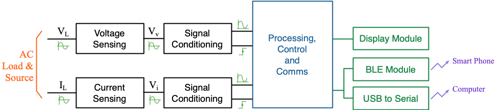] - To implement the core energy monitor functionalities we have to - Measure the load current and voltage - Process these measurements to calculate the power and energy used by the load - To implement a suitable user interface we may need to - Control a display to show the voltage, current, power and energy measurements to the user(s) - Communicate these measurements wirelessly with smart devices - Communicate these measurements through serial with a computer --- name: S3 # How Can we Build an Energy Monitor? .left-column-s[ - Can we build an energy monitor using hardware only? - Electromechanical & analog energy meters have been used in the past - Significant design effort required to produce the complex electronic circuits for processing - Difficult and costly to modifying the system - We cannot build an energy monitor using only software - Must interact with the physical world to measure voltage and current - Have to produce electrical signals to drive display and serial - Electromagnetic waves needed for wireless communication - A solution using a mixture of software and hardware is likely to be the best - Simpler to build, cheaper, and can be easily iterated to improve the design - Hardware is used for interaction with the physical world - Software is used to process, control and communicate ] .right-column-s[ .center[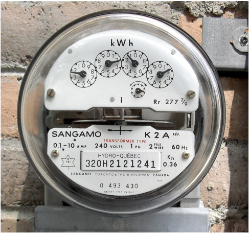 .credits[ An electro-mechanical meter [[1]](https://en.wikipedia.org/wiki/Electricity_meter) ] ] .center[<img src="img/Meter1.png" width="185px"> .credits[ The construction [[2]](https://circuitglobe.com/energy-meter.html) ] ] ] --- name: S4 # The Recommended Design .center[<img src="img/System2.png" height="170">] - Hardware is used to sense the AC voltage & current and then condition them - Produce level-shifted & filtered AC voltage signals that correspond to source voltage and current - Produce rising and falling edges that correspond to zero crossings of source voltage (and current) - The embedded system (i.e. hardware modules in a microcontroller together with software running on it) process the information and generate control and communication signals - Require developing drivers to interact with hardware modules (e.g. UART, ADC and timers) - Require developing software algorithms to process information and generate outputs - Off the shelf modules are used for display, Bluetooth and serial --- name: S5 # Embedded Systems - An embedded system employs a combination of hardware and software to perform a set of specific functions - In our design we use the hardware modules on a microcontroller together with software running on it to process the signals representing voltage and current and generate outputs - Embedded systems have the following general characteristics - Have limited resources - Usually reactive and time-constrained - Often part of a larger system - Resource and timing constraints are the major challenges to developing embedded software - Code size should be minimized and algorithms should be optimized - Hardware peripherals need to be carefully configured to avoid unpredictable behavior - Interrupts need to be short and carefully consider their priorities as well as nested operation - Though a real-time operating system (RTOS) may be used, often designs require custom solutions --- name: S6 # Functional Requirements - Configure the Digital I/O, ADC, UART and Timer peripherals of the microcontroller with appropriate settings for the project - Take ADC samples of signals representing source current and voltage - Samples need to be taken every 0.1ms or slower using a timer to meet our design specifications - First sample taken need to be synchronized with the zero crossing of the voltage signal - Aim to collect 20 or more samples of each signal - Use the samples collected to calculate voltage, current, and power - Perform numeric calculations using rectangular rule to determine the RMS current and power - Can search for the maximum value in the samples collected if needed to determine peak - Every 1s send latest data over the UART - Data should be in the format "Parameter = XXX Unit \n" (e.g. Peak Voltage is: 20.1 V) - Using Digital I/O, control the 7-segment display to show new data every 1s - Refresh the digits at a rate of at least 30 Hz with the aid of a timer --- class: title-slide layout: false count: false .logo-title[] # Microcontrollers ### An Introduction --- layout: true name: template_slide .logo-slide[] .footer[[Duleepa J Thrimawithana](https://www.linkedin.com/in/duleepajt), Department of Electrical, Computer and Software Engineering (2020)] --- name: S7 # What is a Microprocessor? .center[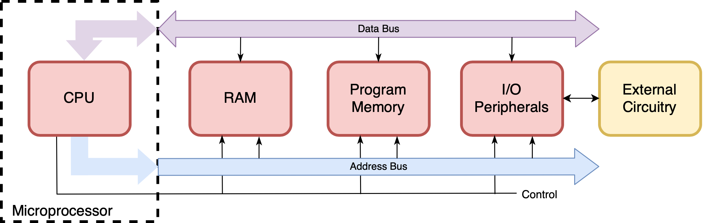] - Microprocessor is a central processing unit (CPU) on a single IC - Microprocessor must have external memories and peripheral I/Os to interact with outside world - Peripherals interact with the microprocessor through data and address buses - The CPU executes software (code) written by a programmer --- name: S8 # What is a Microcontroller? .center[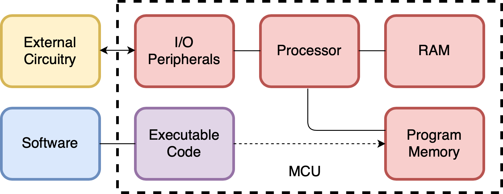] - Microcontrollers (MCUs) combine program memory, RAM, hardware I/O peripherals, and a microprocessor in a single IC - They have fixed hardware which executes software (code) - By modifying the software executed by the microprocessor we can modify its behavior --- name: S9 # What are Reconfigurable Integrated Circuits? .center[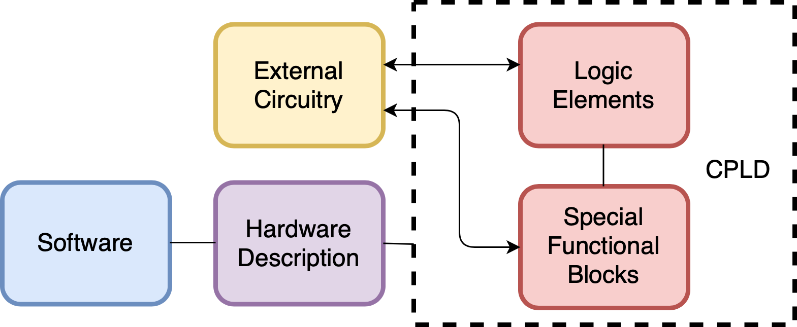] - Field-Programmable Gate Arrays (FPGAs) and Complex Programmable Logic Devices (CPLDs) provide generic logic elements which can be configured to perform arbitrary logic - The reconfigurable hardware they have is described by software - By modifying the software which describes the hardware we can modify the behavior of the circuit --- name: S10 # MCUs vs FPGAs/CPLDs - Lets explore the differences between MCUs and FPGAs/CPLDs to understand why an MCU is the better option for our project <table class="tg" style="undefined;table-layout: fixed; width: 650px; margin-left:auto; margin-right:auto;"> <colgroup> <col style="width: 325px"> <col style="width: 325px"> </colgroup> <thead> <tr> <th class="tg-dzaw"><span style="color:white">MCUs</span></th> <th class="tg-dzaw"><span style="color:white">FPGAs & CPLDs</span></th> </tr> </thead> <tbody> <tr> <td class="tg-jayl">Fixed circuitry</td> <td class="tg-jayl">Flexible circuitry</td> </tr> <tr> <td class="tg-sabo">Executes software</td> <td class="tg-sabo">Described by software</td> </tr> <tr> <td class="tg-ig71">Sequential</td> <td class="tg-ig71">Parallel</td> </tr> <tr> <td class="tg-sabo">Low processing power</td> <td class="tg-sabo">High processing power</td> </tr> <tr> <td class="tg-ig71">General applications</td> <td class="tg-ig71">Specific applications</td> </tr> <tr> <td class="tg-sabo"><b>Low power consumption</b></td> <td class="tg-sabo">High power consumption</td> </tr> <tr> <td class="tg-ig71"><b>Cheap & widespread</b></td> <td class="tg-ig71">Expensive but becoming more widely used</td> </tr> <tr> <td class="tg-sabo"><b>Cheaper development tools</b></td> <td class="tg-sabo">Expensive development tools</td> </tr> <tr> <td class="tg-ig71"><b>Easier to get started</b></td> <td class="tg-ig71">Harder to get started</td> </tr> </tbody> </table> - It is possible to implement a microcontroller on many reconfigurable hardware devices - Some of the newer microcontrollers now also have integrated reconfigurable hardware modules --- name: S11 # What to Consider when Selecting an MCU (PI)? - There are three core resources which must be considered when selecting an MCU for our project - Computational Power - Program Memory - RAM - Computational Power - This is a measure of how quickly the processor can perform a given task - The more computation you need to perform in a given time, the more computational power you need - It is a function of clock speed (how quickly an instruction is executed), and the Instruction Set Architecture (how much computation is performed by a given instruction) - Different architectures target different levels of computational performance - ATmega 328P vs ARM Cortex-A7 - Measured in Millions-of-Instructions-Per-Second (MIPS), but this is only a guide - ATmega 328P – 16 MIPS vs Intel Core I7 – 200,000 MIPS --- name: S12 # What to Consider when Selecting an MCU (PII)? - Program Memory (Flash) - This is where your code to execute is stored - More tasks your program performs, the more code you will require, and the more flash you will need - For microcontrollers it is usually measured in kilobytes (KB), or megabytes (MB) (e.g. an ATmega328P has 32KB of program memory) - Random Access Memory (RAM) - This is where data being processed by the microprocessor is stored, as well as the current microprocessor state - The more data you need to store or operate on at a given time, the more RAM you will require - For microcontrollers it is usually measured in kilobytes (KB), or megabytes (MB) (e.g. an ATmega328P has 2048B of RAM) - Different designs require a different mix of computational power, program memory, and RAM - Our design task is simple, and our resource requirements are limited --- name: S13 # What MCU I/O Peripherals are Important? - Microcontrollers come with a wide range of I/O peripheral to perform different tasks - The most common ones, which we will cover in more detail during the course, are - General Purpose Input Output (GPIO): Allows generating/reading high or low (digital) signals - UART (Universal Asynchronous Receiver Transmitter): Sends and receives binary data using a simple serial protocol - Analog to Digital Converters (ADC): Converts an analog voltage into a digital value - Timers: allow real-time measurements and executing realtime tasks - The above listed common I/O peripherals are generally sufficient for simple projects like ours - There are many more I/O peripherals that we won’t cover but can be important for more complicated projects and these include - Communication peripheral such as I2C, SPI, CAN, USB, and Ethernet - Digital to Analog Converter (DAC) - UI peripheral such as LCD drivers, capacitive touch and audio encoders - AES encryption, brown out protection, watchdog timers and low voltage detection --- name: S14 # Other Important Requirements - There are a number of other functional and non-functional requirements to consider when selecting a MCU - Power consumption - Operating voltage range - Operating temperature range - Packages available (the size and shape of the actual chip) - Compiler support - Development tools required - Programming tools required - Available software libraries - Certifications (automotive, aerospace and military are common ones) - Typically most important requirements are cost, availability, lead-time and minimum-order-quantity (MoQ) - Cost of the devices themselves as well as licenses for tools and software need to be considered --- name: S15 # Why an ATmega328P/ATmega328PB? - To select an appropriate microcontroller for our project we need to estimate the requirements for the functional parameters we looked at - Determining for example the required I/O peripherals and operating voltage are somewhat straightforward - Memory and computational power requirements for example are harder to estimate and often our experience with similar previous projects is needed to do make a good estimate - As discussed previously there are many non-functional aspects to think about - Cost, availability and support (e.g. application notes, tutorials, books, development tools, libraries, etc.) are very important - In many situations we may prefer a familiar device or a device that is easier to use and has a shorter learning curve since development time is a big part of the project cost - The ATmega328P/ATmega328PB has all the peripherals we need and has sufficient memory and computational power but also more importantly it is one of the easiest to use, we are familiar with it (learnt in COMPSYS 201) and there is ample support (e.g. https://community.atmel.com) --- name: S16 # What Other MCUs Can We Use? - Popular microcontroller vendors include STMicroelectronics, NXP, Renesas, Texas Instruments, Microchip and Silicon Labs and there are thousands of devices to select from .center[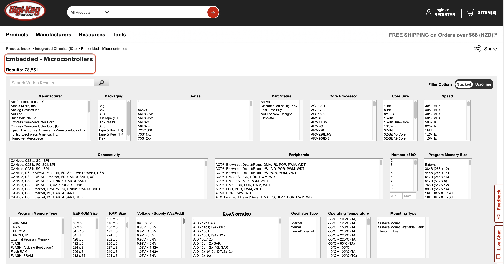] --- name: S17 # The ATmega328P MCU & Tools - The ATmega328P offers the following - 8-bit processor implementing the Atmel AVR RISC architecture - 16 MIPS throughput at 16MHz clock - 32 KB of program memory (flash) which is programmable in-system (the ability of microcontrollers to be programmed while installed in a complete system) - 2 KB of RAM - 3 timers, 8 channel 10-bit SAR type ADC, a USART, and 23 GPIO - External and internal interrupt sources - Operates from 2.7V to 5.5V from -40°C to 125°C - As with COMPSYS 201 we will use the Atmel Studio IDE for development - When getting started, the most important resource available is the [ATmega328P](http://ww1.microchip.com/downloads/en/DeviceDoc/Atmel-7810-Automotive-Microcontrollers-ATmega328P_Datasheet.pdf) datasheet - Lists all of the parameters and explains how the I/O peripherals work and how to use them --- name: S17b # ATmega328P vs ATmega328PB - Proteus VSM, which we will use to simulate and debug modules of the embedded software program, only provide an ATmega328P model - However, we will use the ATmega328PB Xplained Mini evaluation kit in our prototype to avoid having to build additional circuitry - Fortunately, code written for the ATmega328P is forward compatible with ATmega328PB - Some inbuilt macros might need minor modifications so alway test your modules on an ATmega328PB Xplained Mini after validating it in Proteus VSM - The main differences between the ATmega328P and the ATmega328PB are - ATmega328PB has an additional USART module, SPI module and a TWI module - ATmega328PB has 2 additional Timer/Counters - ATmega328PB has additional IO pin functionalities - In the lectures we will only consider the ATmega328P - Examples discussed in the lectures will work on both devices --- name: S18 # ATmega328P Block Diagram & Pinout .center[ <img src="img/328PBlock.png" height="450"> <img src="img/328PPins.png" height="450"> ] --- name: S19 # Your Energy Monitor Implementation - To implement the energy monitor you need to design a PCB that will contain the analog hardware, an ATmega328PB Xplained Mini and the provided 7-segment display as well as HM-10 BLE module - To make a compact design you can replace the Xplained Mini with an ATmega328P/ATmega328PB IC and the support circuitry required for it .center[ 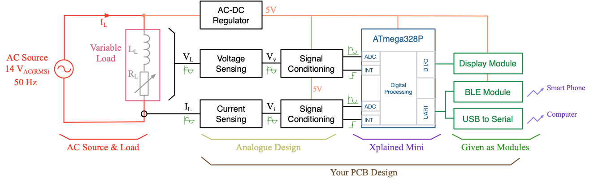 ] --- class: title-slide layout: false count: false .logo-title[] # C Programming Language ### Review of Fundamentals --- layout: true name: template_slide .logo-slide[] .footer[[Duleepa J Thrimawithana](https://www.linkedin.com/in/duleepajt), Department of Electrical, Computer and Software Engineering (2020)] --- name: S20 # Programming the ATmega328P - We will use C, which is extremely common, to develop our embedded software program - Using Atmel Studio IDE, we will then compile the program to generate machine code - The *ELF* file generated during compiling will be simulated in Proteus to validate our design - Prior to this we can also use the debugger available on Atmel Studio to validate our software modules - Once we have validated the functionality of the software, we then download *ELF* or *HEX* file onto the MCU program memory - You will start noticing the benefits of using software as you can iterate through the design much faster in comparison to the time required to iterate hardware - Your first lab will focus on setting up your development environment and getting a simple program running on Proteus - You could also run the same program on an Xplained Mini - The lab will walk you through all of the steps required, so don’t worry if it doesn’t all make sense just yet - There are many steps involved in compiling code, debugging on Atmel Studio, simulating on Proteus and finally programming the physical MCU --- name: S21 # Variables - The most commonly used variable types are <table class="tg" style="undefined;table-layout: fixed; width: 1075px; margin-left:auto; margin-right:auto;"> <colgroup> <col style="width: 150px"> <col style="width: 375px"> <col style="width: 25px"> <col style="width: 150px"> <col style="width: 375px"> </colgroup> <thead> <tr> <th class="tg-dzaw"><span style="color:white">Type</span></th> <th class="tg-dzaw"><span style="color:white">Properties</span></th> <th class="tg-dzaw"><span style="color:white"></span></th> <th class="tg-dzaw"><span style="color:white">Type</span></th> <th class="tg-dzaw"><span style="color:white">Properties</span></th> </tr> </thead> <tbody> <tr> <td class="tg-jayl">char</td> <td class="tg-jayl">8 bit variable with -128 to 127 range</td> <td class="tg-jayl"></td> <td class="tg-jayl">unsigned char</td> <td class="tg-jayl">8 bit variable with 0 to 255 range</td> </tr> <tr> <td class="tg-sabo">int8_t</td> <td class="tg-sabo">8 bit variable with -128 to 127 range</td> <td class="tg-sabo"></td> <td class="tg-sabo">uint8_t</td> <td class="tg-sabo">8 bit variable with 0 to 255 range</td> </tr> <tr> <td class="tg-jayl">int16_t</td> <td class="tg-jayl">16 bit variable with -32768 to 32767 range</td> <td class="tg-jayl"></td> <td class="tg-jayl">uint16_t</td> <td class="tg-jayl">16 bit variable with 0 to 65535 range</td> </tr> <tr> <td class="tg-sabo">int32_t</td> <td class="tg-sabo">32 bit variable with -2147483648 to -2147483647 range</td> <td class="tg-sabo"></td> <td class="tg-sabo">uint32_t</td> <td class="tg-sabo">16 bit variable with 0 to 4294967295 range</td> </tr> <tr> <td class="tg-jayl">float</td> <td class="tg-jayl">32 bit variable with ±1.175e-38 to ±3.402e38 range</td> <td class="tg-jayl"></td> <td class="tg-jayl">bool</td> <td class="tg-jayl">1 bit variable (need #include <span><</span>stdbool.h<span>></span>) </td> </tr> </tbody> </table> - Its good practice to use use explicit variable sizes in your code (size of *int* is platform dependent) - Variables can be declared to have either a local or a global scope - Variables can be declared as static, extern and/or volatile - A static variable is initialized to 0 at the start of the program and if in a function value is retained after exiting the function - Volatile modifier is used to ensure the compiler doesn't optimize away a variable - Type casting is used to temporarily change the type/size of a variable --- name: S22 # Overlooking Variable Types - Issues? .center[<img src="img/VariableIssue.png" width="1030">] --- name: S23 # Assignment and Arithmetic Operators .codes[ ```c static volatile char glob_tom, glob_harry, glob_will; //Declaring global variables with file scope (initialized to 0) int main(void){ uint8_t loc_tom = 5; //Declaring and initializing the variable to 5 uint8_t loc_harry = 300; //Value of loc_harry will be 44!!! //Multiply and modulo operators uint8_t mult = loc_tom * 2; //Value of mult will be 10 uint8_t modu = loc_tom % 10; //Value of modu will be 5 //Importance of type casting float bad_dev = loc_tom / 4; //Value of bad_dev will be 1!!! float good_dev = (float)loc_tom / 4; //Now good_dev will be 1.25 uint16_t reslt_is_16bit = (uint16_t)loc_tom * 100 + 100; //Upcasting loc_tom as (loc_tom * 100) > 255 //Assigning characters, hex and binary values glob_tom = 'A'; //Value of glob_tom will be 65 glob_harry = 0x41; //Value of glob_harry will be 65 glob_will = 0b01000001; //Value of glob_will will be 65 } ``` ] --- name: S23a # Demo: Variables & Operators <iframe height="400px" width="100%" src="https://replit.com/@duleepajt/EE209Example1?lite=true" scrolling="no" frameborder="no" allowtransparency="true" allowfullscreen="true" sandbox="allow-forms allow-pointer-lock allow-popups allow-same-origin allow-scripts allow-modals"></iframe> --- name: S24 # Bitwise, Logical and Rational Operators .codes[ ```c //Bitwise operators: Ones Complement (~), AND (&), XOR (^), OR (|), Left Shift (<<), Right Shift (>>) uint8_t in_binary = 0b00110011; //Value will be 0x33 in hex or 51 in decimal in_binary ^= 0b00001111; //XOR each bit of in_binary with corresponding bit of 0b00001111 //result is assign back to in_binary making it 0b00111100 uint8_t left_shft = 0b11001100 << 2; //Shift to left makes left_shft = 0b00110000 (each Left Shift == x2) uint8_t maskd = 0x53 & 0x0F; //Masking - used to mask off last 4-bits (maskd = 0x03) uint8_t slctd = 0x33 & (1<<1 | 1<<2); //Selecting 2nd and 3rd bits of 0x33 making slctd = 0x02 //Logical operators: AND (&&), OR (||) bool log_and = 4 && 2; //log_and will be 1 (True) bool bit_and1 = 4 & 2; //bit_and1 will be 0 (False) bool bit_and2 = 3 & 2; //bit_and2 will be 1 (True) //Rational operators: Equal (==), Not Equal (!=), Less Than (<), Less Than or Equal (<=), //More Than (>), More Than or Equal (>=) bool chck_greater = 5 >= 10; //chck_greater will be 0 (False) ``` ] - A variable, lets say *counter*, can be also pre or post incremented/decremented, using for example *++counter* or *counter++*, respectively - Compound assignment operators (e.g. * total_cost += new_item_cost; *) may also be used --- name: S25 # Control Statements .codes[ ```c #define NUMTOCHECK 7 //#define is a preprocessor directive int main(void){ uint8_t cnt1 = 0, is_prime = 1; //Initializing cnt1 to 0 and is_prime to 1 //WHILE & FOR loops while(cnt1<4){ cnt1++; //Code inside this while loop will be executed 4 times } for(uint8_t cnt2 =0; cnt2 < 4; cnt2++){ cnt1++; //Code executed 4 times (cnt2 is not visible outside this loop) } //IF-ELSE statements - E.g. Checking if NUMTOCHECK is a prime number for(uint8_t cnt2 =2; cnt2 < NUMTOCHECK; cnt2++){ if( (NUMTOCHECK % cnt2) == 0 ){ //If NUMTOCHECK can be divided by a nummber less than that its not a prime is_prime = 0; //Clears the flag break; //Breaks the FOR loop as no need to continue } } } ``` ] --- name: S24a # Demo: Bitwise Operators <iframe height="400px" width="100%" src="https://replit.com/@duleepajt/EE209BitOperators?lite=true" scrolling="no" frameborder="no" allowtransparency="true" allowfullscreen="true" sandbox="allow-forms allow-pointer-lock allow-popups allow-same-origin allow-scripts allow-modals"></iframe> --- name: S26 # Functions .codes[ ```c #define NUMTOCHECK 7 //#define is a preprocessor directive bool check_prime(uint8_t chk_no); //Function prototype int main(void){ //Call function check_prime() to check if NUMTOCHECK is a prime //The function takes uint8_t type parameter and returns a bool bool is_prime = check_prime(NUMTOCHECK); while(1){ } } bool check_prime(uint8_t chk_no){ //Function returns true if chk_no is a prime for(uint8_t cnt1=2; cnt1 < chk_no; cnt1++){ if( (chk_no % cnt1) == 0){ //If chk_no can be divided by a nummber less than that its not a prime return false; //Return false to the function caller } } return true; //If chk_no cannot be divided by a nummber less than that its a prime } ``` ] --- class: title-slide layout: false count: false .logo-title[] # ATmega328P GPIO ### Configuring and Using GPIO --- layout: true name: template_slide .logo-slide[] .footer[[Duleepa J Thrimawithana](https://www.linkedin.com/in/duleepajt), Department of Electrical, Computer and Software Engineering (2020)] --- name: S27 # Memory Mapped Peripherals .left-column[ - The ATmega328P peripherals are what are known as “memory mapped” peripherals - They share the same address space as the register file and RAM - A specific address is used to access registers which control the peripheral, and contain the input/output data from the peripheral - This means we can write to them in code just like any other variable - The manufacturer provides files with macros for the address of each peripheral - Using these we can refer to peripherals by name (e.g. DDRB), rather than their address (e.g. 0x0024) - In our case *#inlcude <span><</span>avr/io.h<span>></span>* defines the peripheral names we will use ] .right-column[ .center[ 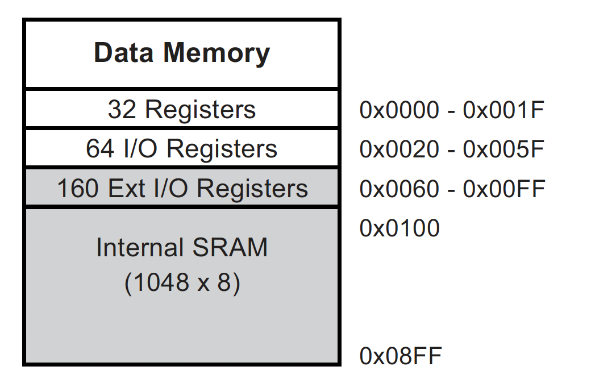 ] ] --- name: S28 # General Purpose I/O - As discussed, we use the I/O peripherals provided to interface with external hardware - As a developer, you need to write software drivers to effectively interact with the peripherals - We will start with the simplest I/O peripheral – General Purpose Input/Output (GPIO) - Most pins on the ATmega328P can be used as GPIO - GPIOs have two states, logic high (1), and logic low (0) - When used as an output they produce a logic high or logic low signal on the pin - When used as an input they read a signal applied to the pin as logic high or logic low - Internally, the logic level is represented by a single bit - Externally, logic low is 0V and logic high is represented by MCU supply voltage (e.g. 5V) .center[<img src="img/LogicV.png" height="150">] --- name: S29 # ATmega328P GPIO Registers - The ATmega328P has 23 GPIO pins separated into PORTB, PORTC and PORTD (e.g. PB0-PB7) - There are 3 registers associated with each GPIO port <table class="tg" style="undefined;table-layout: fixed; width: 650px; margin-left:auto; margin-right:auto;"> <colgroup> <col style="width: 250px"> <col style="width: 400px"> </colgroup> <thead> <tr> <th class="tg-dzaw"><span style="color:white">Register</span></th> <th class="tg-dzaw"><span style="color:white">Function</span></th> </tr> </thead> <tbody> <tr> <td class="tg-jayl">DDRX</td> <td class="tg-jayl">Data Direction Register of Port 'X' where 'X' is B or C or D</td> </tr> <tr> <td class="tg-sabo">PORTX</td> <td class="tg-sabo">Data Out Register for Port 'X' where 'X' is B or C or D</td> </tr> <tr> <td class="tg-jayl">PINX</td> <td class="tg-jayl">Data In Register for Port 'X' where 'X' is B or C or D</td> </tr> </tbody> </table> - From the datasheet we can see that the direction for each pin is set by setting/clearing the corresponding bits in the DDRX register - 0 represents an input while 1 represents an output - To set the output value of a pin we use the corresponding bit of the PORTX register - Setting to 1, will generate a high signal (e.g. 5V) at output while a 0 will generate 0V - To read the input value of a pin we use the corresponding bit of the PINX register - If the voltage is 0V a logic low will be read while a high signal (e.g. 5V) will be read as logic high --- name: S30 # GPIO Register Description .center[ <img src="img/DDRX.png" width="600"> 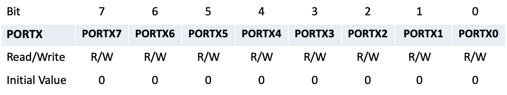 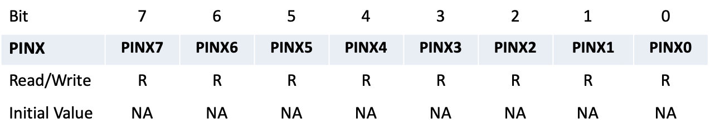 ] - For example, the first bit of DDRB, PORTB and PINB registers are associated with pin 0 of PORTB (i.e. DDRB0, PORTB0 and PINB0 bits correspond to PB0) --- name: S31 # GPIO Implementation .center[ 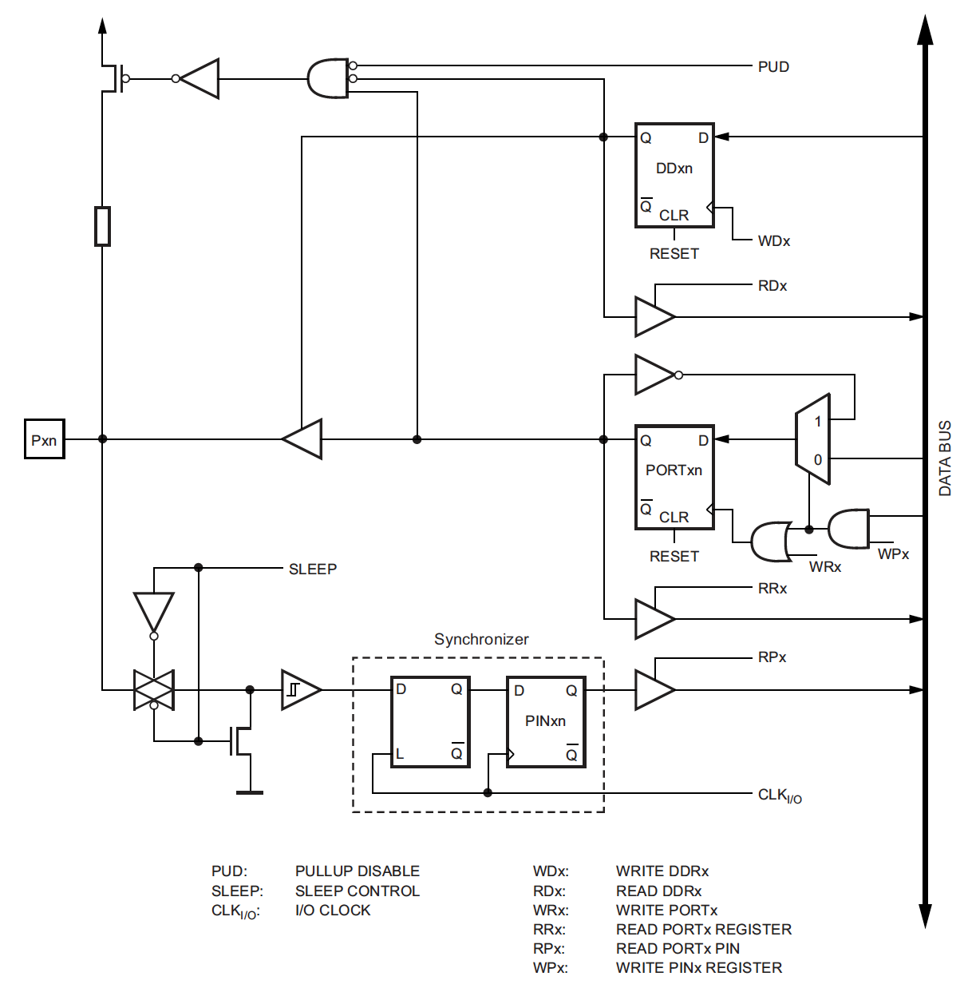 ] --- name: S32 # Example: Reading Input & Driving LED (PI) .questions[ Develop a program to read the input from a push-button and control an LED. As shown by the Proteus schematic below, one end of the push-button is connected PB7 on ATmega328P while the other end is connected to the ground. The pull-up resistor, `\( R_1 \)`, ensures the voltage at PB7 is pulled to 5V (i.e. VCC supplied to the MCU) when the push-button is released. The filter capacitor, `\( C_1 \)`, is used for debouncing. When the push-button is pressed it creates 0V at PB7, when released PB7 will be 5V. LED is connected to PB5 through a current limiting resistor, `\( R_2 \)`. Generating 5V at PB5 will create a current to flow turning-on the LED (i.e. `\( I_\text{LED} = \left ( 5 - V_\text{f} \right ) / R_2 \)` where `\( V_\text{f} \approx 2\, \text{V}\)` for a yellow LED). Setting PB5 to 0V will turn-off the LED. ] .center[ <img src="img/LEDDemo.png" width="750"> ] --- name: S33 # Example: Reading GPIO Input & Driving LED (PII) .codes[ ```c #include <avr/io.h> //Macros for register addresses for peripherals (e.g. PORTB) int main(void) { DDRB |= (1 << 5); //Set the PB5 (connected to LED) as an output DDRB &= ~(1 << 7); //Set the PB7 (connected to push-button) as an input //If we weren't using the macros, we could access the registers by address //E.g. uint16_t* port_b_address_ptr = 0x0025; while (1){ if ( (PINB & (1 << 7)) == 0 ){ //If PB7 is reading 0V (i.e. logic 0) PORTB |= (1 << 5); //Turn-on the LED //This statement is equivalent to writing *port_b_address_ptr |= (1 << 5); } else{ //Else PB7 should be logic 1 PORTB &= ~(1 << 5); //Turn-off the LED //This statement is equivalent to writing *port_b_address_ptr &= ~(1 << 5); } //Equally PORTB = (PORTB | (1 << 5)) & ~(PINB >> 2); can be used instead of IF-ELSE above } } ``` ] --- class: title-slide layout: false count: false .logo-title[] # Acknowledgments #### These slides are adapted from material prepared by Travis Scott & Muhammad Nadeem